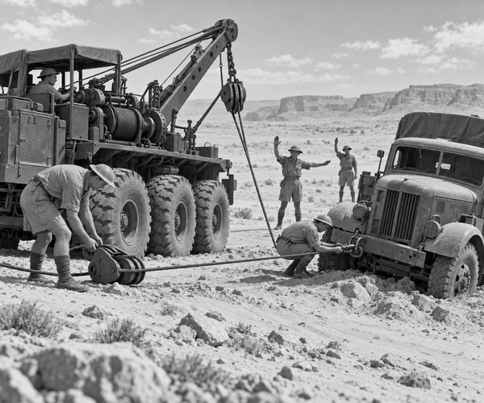

During World War Two, army lorries carried food, fuel and tools.
They travelled over roads, rocks and deep sand.
Sometimes a lorry broke down.
Sometimes its wheels sank into soft ground.
Then another kind of vehicle was called.
It was built to rescue the rescuers.
Its name was the Scammell Pioneer.
It had six large wheels.
It carried a powerful winch.
A small crane stood over its rear deck.
Lockers held chains, ropes, tools and towing bars.
Vehicle fact: The Scammell Pioneer was developed in the 1930s. It served as a British Army heavy recovery vehicle throughout World War Two and for many years afterwards.
Imagine a typical recovery job in the desert.
A cargo lorry has left the firm track.
Its front wheels have dug into loose sand.
The driver tries to move.
R-r-r-r-r!
The wheels spin.
Sand sprays behind them.
The lorry sinks even deeper.
The driver stops.
Spinning the wheels will only dig bigger holes.
Soon, the Pioneer rumbles into view.
Grumble. Rumble. Grumble.
The recovery crew does not pull at once.
First, they inspect the stuck lorry.
Is anything broken?
How heavy is it?
Which way should it move?
Where is the ground firm?
The crew parks the Pioneer on solid sand.
They dig a gentle ramp in front of the trapped tyres.
Then they unroll the thick steel winch cable.
A hook fastens to a strong towing point.
It does not fasten to the bumper or a thin piece of metal.
Those parts might bend.
The lorry is very heavy.
So the crew adds a pulley block.
The cable runs around its wheel and back towards the Pioneer.
This setup lets the winch pull harder.
Pulley fact: A pulley can change the direction of a cable. When a cable is looped through the right pulley setup, two parts of the cable can help share the pull.
Everyone checks the hooks.
Everyone checks the cable.
Then the crew moves well away from it.
A tight steel cable stores lots of energy.
Nobody steps over it.
Nobody stands beside it.
One mechanic raises his hand.
The winch begins to turn.
Click. Whirr. Click. Whirr.
The cable grows straight and tight.
The stuck lorry rocks.
Its front tyres climb the little sand ramp.
The Pioneer keeps pulling slowly.
One wheel rises.
Then the other.
The cargo lorry rolls back onto firm ground.
The mechanic drops his hand.
The winch stops.
The crew makes the cable loose before anyone goes near it.
They inspect the rescued lorry again.
Nothing is bent.
Nothing is leaking.
The engine still works.
Soon the cargo lorry is moving along the track.
The Scammell Pioneer follows behind.
It is slow, heavy and not very shiny.
But when another vehicle cannot move, the six-wheel rescuer can bring it home.
1. What vehicle came to help the stuck lorry?
2. Why did the crew use a pulley block?
3. Where did the crew stand during the pull?